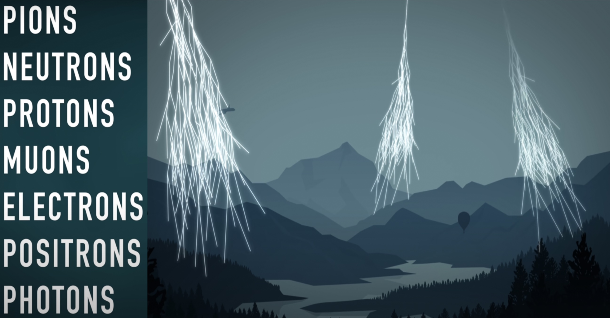
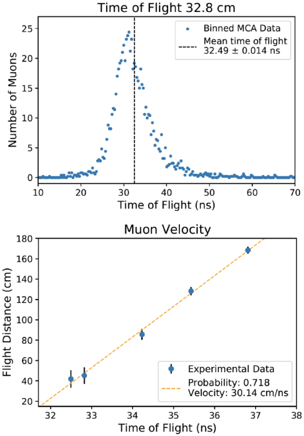
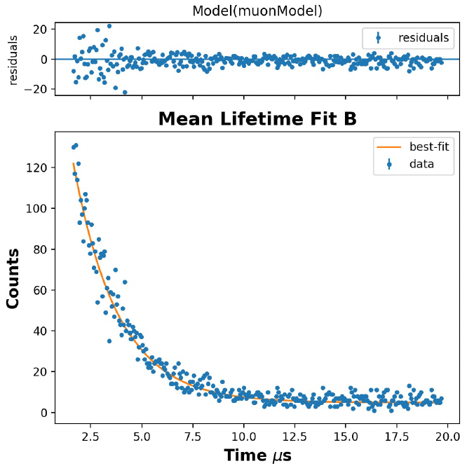

Measuring Relativistic Particle Decay

Overview
Earth's atmosphere is being continuously bombarded by high energy atomic particles called cosmic rays. These high energy rays slam into air molecules in the upper atmosphere, and rain down cascades of particles onto the surface below.
The initial collision creates pions, which decay almost instantaneously to muons, which should in turn decay rather quickly to electrons, photons, and other simpler particles.
The trouble is, by the time these particle cascades reach sea level, there shouldn't be any muons left, they should have decayed to other particles ages ago.
However, sea level muons are exceedingly common: if you hold your hand out flat, about 100 muons originating from cosmic ray collisions will pass through it every minute. What gives?
Using the scintillation detectors at MIT's junior physics laboratory, a colleague and I measured the velocity of 15,000 muons travelling from their cosmic ray origins to be 30.14 ± 1.96 cm / ns (basically right around the speed of light).
Although this sounds fast, it would take muons at this speed 50 microseconds to get from the upper atmospere to sea level.
However, if you bring muons to a complete stop in a scintillator chamber, their mean lifetime before decaying is only 2.2 microseconds. So how are so many muons making the atmosphere to sea level journey before decaying?
The answer is that this experiment is a famous proof of Einstein's Theory of Special Relativity: the muons coming from the upper atmosphere actually
have a much shorter distance to travel to sea level than we might think because of length contraction.
Methods
Velocity of Relativistic Muons
To measure the velocoity of muons, we use scintillation detectors, sheets of photosensitive material that emit electrons when cosmic particles like muons pass through them.
We have two scintillators (an upper one and a lower one), and we measure the delay from a particle that first travels through the top detector and then through the bottom detector.
We record thousands of particle travel times for a fixed separation between the top and bottom scintillators.
You can see a histogram of this data for a separation of 32.8 cm in the top plot to the right.
In order to convert these times of flight into muon velocity, we need to know the average path length that muons take through the detector.
Because the scintillators are rectangles, and muons can come from any overhead angle, the estimation of the average path length is best done with a weighted monte carlo simulation.
We simulated millions of muons travelling through the detector geometry, weighing each by how likely the path was (directly overhead trajectories are more likely, trajectories close to one end of the detector are more easily picked up by the computer, etc).
Once we have the average time of flight and path length, we know the velocity. We repeat this procedure at a number of different separations to remove constant terms in the signal analysis chain, and the result is plotted to the right!
We have an average muon velocity of 30.14 ± 1.96 cm / ns with a R2 of 0.72.

Lifetime of Relativistic Muons
>

Now that we know the velocity of muons, lets measure their lifetime at rest.
We first bring the particles to rest in a large plastic scintillator inside of a dark container. When the muons first enter the container and come to rest, they deposit an energy of 50 MeV, and when the resting muons decay, they deposit another 20 MeV.
So we can measure muon time-to-decay as the difference between the first 50 MeV scintillation, and a subsequent 20 MeV scintillation.
We count this time difference for 7,500 muon decay events, and plot the histogram of decay times to the left.
This decay curve is then fit with an exponential function, and we measure a half life of 2.196 ± 0.055 microseconds.
In plain english, this means that if we start with 100 muons at rest, after 2.2 microseconds we expect to only have 50, after another 2.2 microsecends we will have 25, then 12.5, them 6.25 and so on.
In both this section and the section above, there is a lot of effort to discount noise from these measurements, and to make sure that signals from two-part events (like a particle passing through a top and then a bottom scintillator, or a muon coming to rest and then decaying)
are indeed coming from the same particle. For example, we have a coincidence check in the signal analysis chain that reads the signals from the scintillators, and we add appropriate delays to make sure the second
event doesn't arrive at the computer before the first one. Please read more about these decisions in the writeup linked below!
Results
We now know that muons travel at about the speed of light, and if we bring them to rest they decay with a half life of 2.2 microseconds.
Almost all the muons on earth form in cosmic ray collisions at altitudes above 15 km, so that means that their journey from birth to sea level takes a minimum of 50 microseconds.
This is obviously way longer than their half life at rest, but let's quantify that a little more precisely.
If we assume that muons in motion and muons at rest have the same half life, then we can estimate the probability of a muon surviving for 50 microseconds with the equation exp(-50/2.2) ~ 1*10^-10.
So under this assumption, only one in every 10 billion muons survives to reach sea level. Cosmic ray collisions are common, but certainly not this common, so why do you have hundreds of muons passing through your body at sea level every minute?
The problem is with the assumption that the muons at rest and the muons in motion have the same concept of time. Due to special relativity, because the muons are travelling so close to the speed of light, they experience time much more slowly than we do,
and they experience distances much shorter than we do (called length contraction).
Even at velocities slightly lower than the ones we found (say 29.5 cm / ns), muons experience distances 5.5 times shorter than we do, so instead of travelling 15 km to sea level, they only travel 2.7 km.
With these new numbers, the probability of a muon reaching sea level before decaying is actually only 1 / 62, which is much more reasonable!
Code
The code for this project - including the monte carlo simulations, the linear regression fit, the plot generation - is all on an old computer of mine.
I'm currently trying to get access to that computer, so that I can upload this project in full, but for now, please take a look at the writeup below for more details!
Download Writeup